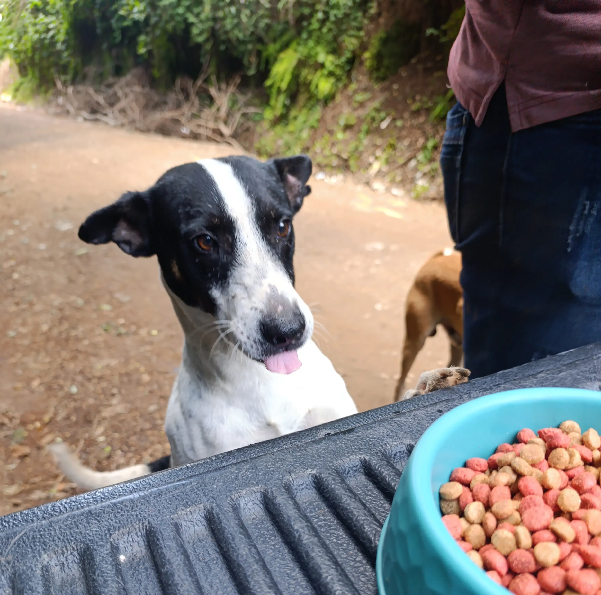

Nuestros programas
Detrás de cada animalito que recupera su salud, encuentra alimento o consigue una familia, hay un programa que lo hace posible. Estos son los proyectos que sostienen el trabajo de Paraíso 503.

Ruta de Alimentación
El corazón de Paraíso. Llevamos alimento y agua a perros en abandono; desde aquí nacen muchos de nuestros rescates y programas.
Ver programa →
Lucha contra el Cáncer
Brindamos apoyo y tratamiento a perros con distintos tipos de cáncer, como el tumor de Sticker (TVT), para darles una nueva oportunidad.
Ver programa →
Adopciones Responsables
Buscamos familias comprometidas que ofrezcan un hogar seguro y lleno de amor para cada perro.
Ver programa →Te llevará a la página completa de programas.

Esterilización
Promovemos la esterilización como una forma responsable de prevenir el abandono y mejorar el bienestar animal.
Ver programa →
Hogar Paraíso
Un lugar donde viven y reciben cuidados los perros rescatados mientras esperan una familia o continúan su recuperación.
Ver programa →
Atención Veterinaria
Ofrecemos atención médica para recuperar la salud y mejorar la calidad de vida de los perros rescatados.
Ver programa →
Apoyo a Mascotas de Familias de Bajos Recursos
Brindamos ayuda para que más familias puedan cuidar y mantener saludables a sus mascotas.
Ver programa →
Visitas Solidarias
Acercamos a personas, grupos y empresas para que conozcan el proyecto y compartan tiempo con nuestros perros.
Ver programa →
Transparencia
Mostramos con claridad cómo se utilizan las donaciones y el impacto que generan en cada programa.
Ver programa →